library(dplyr)
library(tidyr)
library(haven)
library(forcats)
library(ggplot2)
library(patchwork)
library(survival)
library(broom)
library(flexsurv)
library(purrr)
library(glue)
library(timereg)
library(broom.helpers)
data_dir <- file.path("..", "mer_data_stata")
mi <- read_dta(file.path(data_dir, "mi.dta")) |>
mutate(across(where(haven::is.labelled), haven::as_factor)) |>
mutate(
died = as.integer(died),
mar_label = case_when(
mar == 1 ~ "Married",
mar == 0 ~ "Not married",
TRUE ~ NA_character_
),
sex = factor(sex, labels = c("Female", "Male")),
card = as.integer(card),
ptca = as.integer(ptca),
prcabg = as.integer(prcabg)
) |>
mutate(
mar_c2 = factor(mar_label, levels = c("Not married", "Married")),
surv_mi = as.numeric(surv_mi),
los = as.numeric(los)
)
mar_counts <- table(mi$mar_c2, useNA = "no")
missing_marital <- length(mar_counts) < 2
surv_object <- Surv(time = mi$surv_mi, event = mi$died)15 SME Chapter 14: Modelling Survival Data
Note
This chapter reproduces and expands upon the analyses from the original Methods in Epidemiologic Research (MER) Chapter 19 (Dohoo, Martin, & Stryhn, 2012) using R with data sourced from ../mer_data_stata/mi.dta. The chapter covers survival analysis - essential methods for analyzing time-to-event data in epidemiology, including Kaplan-Meier estimation, Cox proportional hazards models, and parametric survival models.
15.1 Replication Notes
- Data dependencies:
../mer_data_stata/mi.dta. - Required R packages:
dplyr,tidyr,haven,forcats,ggplot2,patchwork,survival,broom,flexsurv,purrr,glue,timereg,broom.helpers. - Setup tips: Install using
install.packages(c("dplyr","tidyr","haven","forcats","ggplot2","patchwork","survival","broom","flexsurv","purrr","glue","timereg","broom.helpers")). - Execution: Knit or run interactively; data preprocessing, survival objects, and model fits are all regenerated from the raw dataset.
15.2 Theoretical Background
Understanding Survival Analysis
Before we analyze survival data, let’s understand what makes it special and how we analyze it. Survival analysis is fundamental to epidemiology, especially for studying disease outcomes, treatment effects, and risk factors (Dohoo, Martin, & Stryhn, 2012; Kirkwood & Sterne, 2003; Rothman, Huybrechts, & Murray, 2024):
15.2.1 What Makes Survival Data Different?
Survival analysis is about time until an event happens - like “how long until death?” or “how long until disease returns?” This is different from regular data because:
- Time is the outcome: We’re interested in “how long?” not just “did it happen?”
- Censoring: Some people haven’t had the event yet when we stop watching. Like someone who’s still alive at the end of the study - we know they survived at least that long, but not how much longer.
- Right-censoring: The most common type - we know someone survived at least X time, but don’t know if/when they’ll have the event later
15.2.2 Key Concepts
Survival Function: This shows the probability of surviving past a certain time. Like “what’s the chance someone survives past 1 year? Past 2 years?” It starts at 100% (everyone is alive at time 0) and decreases over time.
Hazard Function: This shows the “instantaneous risk” - like “if you’ve survived to this point, what’s your risk of dying right now?” It’s like the speedometer of risk - how fast is the risk changing at this moment?
Kaplan-Meier Estimator: A way to estimate survival curves from data. It’s like drawing a survival curve that follows your actual data, accounting for censoring. It’s non-parametric (doesn’t assume a specific shape).
Cox Proportional Hazards Model: A way to see how factors (like treatment) affect survival. It assumes that the effect of a factor is proportional - like “treatment always reduces risk by 50%, regardless of when you look.” It’s very flexible and widely used.
15.2.3 Why Special Methods Are Needed
Regular statistics (like t-tests or regression) don’t work well with survival data because: - They can’t handle censoring properly - They don’t account for time as the outcome - They might give biased results
Survival analysis methods are designed specifically for this type of data.
15.2.4 Types of Survival Models
- Non-parametric: Like Kaplan-Meier - makes no assumptions about the shape of survival curves
- Semi-parametric: Like Cox models - makes some assumptions (proportional hazards) but not about the baseline hazard
- Parametric: Assumes a specific distribution (like exponential or Weibull) - more assumptions but can be more powerful if correct
15.2.5 The Proportional Hazards Assumption
Cox models assume that if treatment reduces risk by 50% at 1 year, it also reduces risk by 50% at 2 years, 3 years, etc. This is the “proportional hazards” assumption. We need to check if this is true - if not, we might need different methods.
In simple terms: Survival analysis is about studying “time until an event” - like how long people live or how long until disease returns. It’s special because some people haven’t had the event yet (censoring), and we need special methods to handle this. The goal is to understand what factors affect survival time and how.
15.3 Setup
What is this section doing?
This section loads and prepares survival data - data about how long until an event happens (like death or disease recurrence). Think of it like tracking time:
- Loading tools: Getting packages for survival analysis
- Reading data: Opening the myocardial infarction (heart attack) dataset
- Creating survival objects: Setting up data to track “time until death” and “did death occur?”
- Data cleaning: Converting variables to the right format
In simple terms: We’re preparing to answer questions like “how long do people survive after a heart attack?” and “what factors affect survival time?”
15.4 Survival Plot Helpers
What is this section doing?
This section creates helper functions to make survival plots easier. Think of it like creating templates for drawing survival curves:
- tidy_survfit(): Converts survival analysis results into a format that’s easy to plot
- Handles multiple groups: Can plot survival curves for different groups (like men vs women) on the same graph
In simple terms: We’re creating tools to visualize survival data - showing how the probability of survival changes over time.
`%||%` <- function(x, y) if (!is.null(x)) x else y
tidy_survfit <- function(fit, fun = c("survival", "cumhaz", "cloglog")) {
fun <- match.arg(fun)
fun_arg <- switch(fun,
survival = NULL,
cumhaz = "cumhaz",
cloglog = "cloglog"
)
surv_summary <- if (is.null(fun_arg)) summary(fit) else summary(fit, fun = fun_arg)
# Handle case where surv is a matrix (multiple curves)
surv_vals <- surv_summary$surv
if (is.matrix(surv_vals)) {
# Multiple curves - need to expand data
n_curves <- ncol(surv_vals)
n_times <- nrow(surv_vals)
# Get strata labels
if (is.null(surv_summary$strata)) {
# If no strata but matrix, create labels from column names or indices
if (!is.null(colnames(surv_vals))) {
strata_labels_raw <- colnames(surv_vals)
} else {
strata_labels_raw <- paste0("Curve", 1:n_curves)
}
} else {
# Use existing strata - extract unique labels
raw <- as.character(surv_summary$strata)
if (all(grepl("=", raw))) {
strata_labels_raw <- unique(vapply(
raw,
function(x) {
parts <- strsplit(x, "=")[[1]]
trimws(parts[length(parts)])
},
character(1)
))
} else {
strata_labels_raw <- unique(raw)
}
# If we have fewer labels than curves, pad with indices
if (length(strata_labels_raw) < n_curves) {
strata_labels_raw <- c(strata_labels_raw, paste0("Curve", (length(strata_labels_raw) + 1):n_curves))
}
# Take only the number we need
strata_labels_raw <- strata_labels_raw[1:n_curves]
}
# Expand strata labels to match the expanded data structure
# Each curve gets n_times rows, so we repeat each label n_times times
strata_labels <- rep(strata_labels_raw, each = n_times)
# Expand all vectors to match matrix structure
time_vec <- rep(surv_summary$time, times = n_curves)
estimate_vec <- as.vector(surv_vals)
# Handle std.error, conf.low, conf.high if they're also matrices
std_err_vec <- if (is.matrix(surv_summary$std.err)) {
as.vector(surv_summary$std.err)
} else {
rep(surv_summary$std.err, times = n_curves)
}
conf_low_vec <- if (is.matrix(surv_summary$lower)) {
as.vector(surv_summary$lower)
} else {
rep(surv_summary$lower, times = n_curves)
}
conf_high_vec <- if (is.matrix(surv_summary$upper)) {
as.vector(surv_summary$upper)
} else {
rep(surv_summary$upper, times = n_curves)
}
return(tibble(
time = time_vec,
estimate = estimate_vec,
std.error = std_err_vec,
conf.low = conf_low_vec,
conf.high = conf_high_vec,
strata = factor(strata_labels, levels = unique(strata_labels))
))
}
# Single curve case (original code)
strata_labels <- if (is.null(surv_summary$strata)) {
rep("Overall", length(surv_summary$time))
} else {
raw <- as.character(surv_summary$strata)
if (!length(raw)) {
rep("Overall", length(surv_summary$time))
} else if (all(grepl("=", raw))) {
vapply(
raw,
function(x) {
parts <- strsplit(x, "=")[[1]]
trimws(parts[length(parts)])
},
character(1)
)
} else {
raw
}
}
tibble(
time = surv_summary$time,
estimate = surv_summary$surv,
std.error = surv_summary$std.err,
conf.low = surv_summary$lower,
conf.high = surv_summary$upper,
strata = factor(strata_labels, levels = unique(strata_labels))
)
}
plot_survfit <- function(fit,
fun = c("survival", "cumhaz", "cloglog"),
conf.int = TRUE,
xlab = "Time",
ylab = NULL,
legend.title = NULL,
legend.labs = NULL) {
fun <- match.arg(fun)
surv_df <- tidy_survfit(fit, fun)
if (!is.null(legend.labs) && length(legend.labs) == nlevels(surv_df$strata)) {
surv_df <- surv_df |>
mutate(strata = factor(strata, levels = levels(strata), labels = legend.labs))
}
ylab <- ylab %||% switch(
fun,
survival = "Survival probability",
cumhaz = "Cumulative hazard",
cloglog = "-log(-log(Survival))"
)
p <- ggplot(surv_df, aes(x = time, y = estimate, group = strata))
if (nlevels(surv_df$strata) > 1) {
p <- p +
aes(colour = strata, linetype = strata)
}
if (conf.int && any(!is.na(surv_df$conf.low))) {
ribbon_df <- surv_df |> filter(!is.na(conf.low))
if (nlevels(surv_df$strata) > 1) {
p <- p +
geom_ribbon(
data = ribbon_df,
aes(x = time, ymin = conf.low, ymax = conf.high, fill = strata),
alpha = 0.2,
colour = NA,
inherit.aes = FALSE
)
} else {
p <- p +
geom_ribbon(
data = ribbon_df,
aes(x = time, ymin = conf.low, ymax = conf.high),
fill = "grey80",
alpha = 0.3,
colour = NA,
inherit.aes = FALSE
)
}
}
p <- p + geom_step()
if (nlevels(surv_df$strata) == 1) {
p <- p +
scale_colour_manual(values = "black") +
guides(colour = "none", linetype = "none", fill = "none")
} else {
p <- p +
labs(colour = legend.title, linetype = legend.title, fill = legend.title)
}
p +
labs(x = xlab, y = ylab) +
theme_minimal()
}15.5 Figure 19.1: Histogram of Survival Times among Deaths
mi |>
filter(died == 1) |>
ggplot(aes(x = surv_mi)) +
geom_histogram(binwidth = 30, colour = "black", fill = "grey80") +
labs(x = "Survival time (days)", y = "Frequency") +
theme_minimal()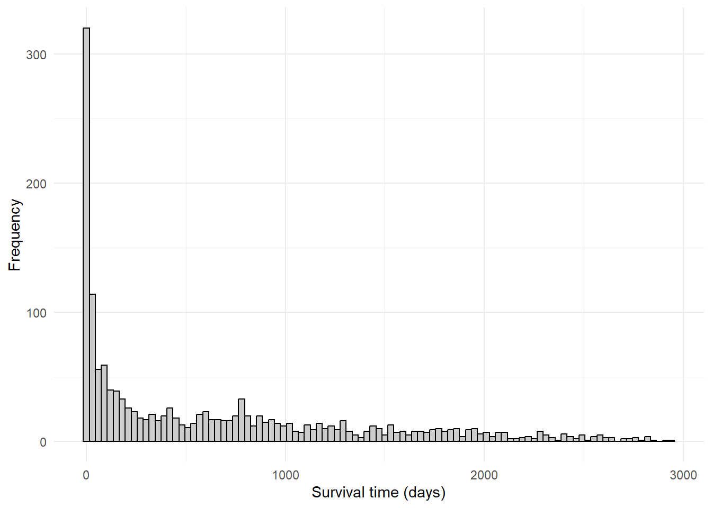
15.6 Kaplan–Meier and Actuarial Estimates
mi_bypass <- mi |>
filter(prcabg == 1)
surv_bypass <- Surv(mi_bypass$surv_mi, mi_bypass$died)
km_bypass <- survfit(surv_bypass ~ 1)
km_bypass_summary <- summary(km_bypass, times = seq(0, 365 * 10, by = 365))
km_bypass_summaryCall: survfit(formula = surv_bypass ~ 1)
time n.risk n.event survival std.err lower 95% CI upper 95% CI
0 391 4 0.990 0.00509 0.980 1.000
365 273 114 0.698 0.02321 0.654 0.745
730 223 50 0.570 0.02503 0.523 0.622
1095 185 38 0.473 0.02525 0.426 0.525
1460 118 18 0.419 0.02541 0.372 0.472
1825 94 21 0.343 0.02569 0.296 0.397
2190 45 11 0.295 0.02589 0.249 0.351
2555 39 6 0.256 0.02697 0.208 0.315
2920 2 3 0.231 0.02809 0.182 0.293plot_survfit(
km_bypass,
conf.int = TRUE,
xlab = "Time (days)",
ylab = "Cumulative survival probability"
)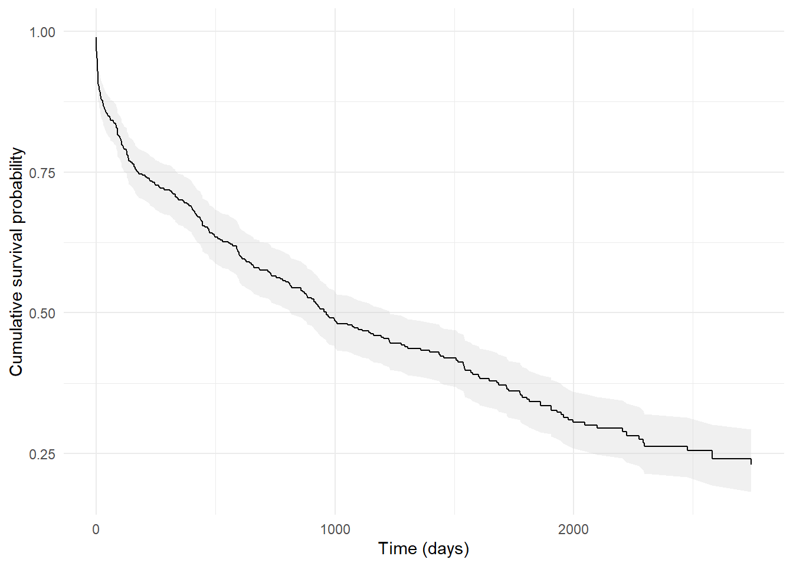
plot_survfit(
km_bypass,
fun = "cumhaz",
conf.int = TRUE,
xlab = "Time (days)",
ylab = "Cumulative hazard"
)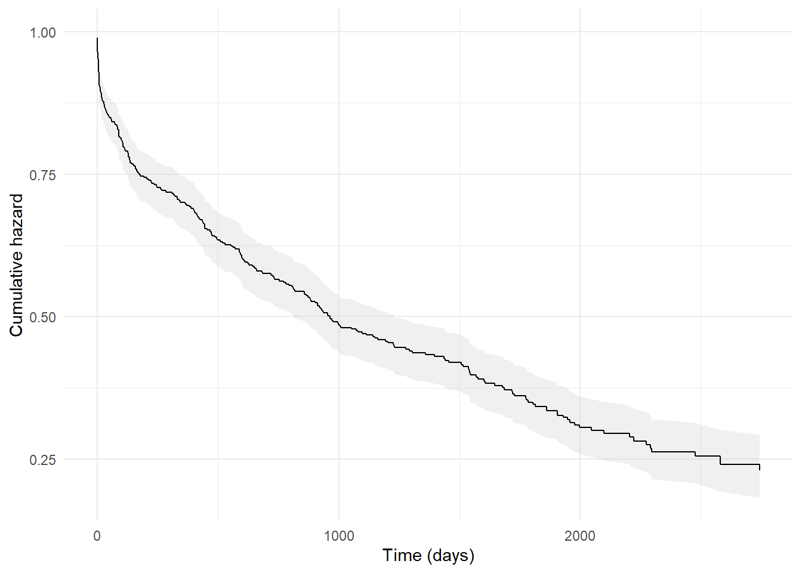
15.7 Log-Rank and Other Non-Parametric Tests
missing_marital <- nlevels(mi$mar_c2) < 2
mi_mar <- mi |> filter(!is.na(mar_c2))
if (n_distinct(mi_mar$mar_c2) < 2) {
warning("Marital status has a single level; skipping non-parametric tests.")
mar_tests <- list(
logrank = "Skipped: only one marital status level",
wilcoxon = "Skipped: only one marital status level",
fleming_harrington = "Skipped: only one marital status level"
)
} else {
mar_tests <- list(
logrank = survdiff(Surv(surv_mi, died) ~ mar_c2, data = mi_mar, rho = 0),
wilcoxon = survdiff(Surv(surv_mi, died) ~ mar_c2, data = mi_mar, rho = 1),
fleming_harrington = survdiff(Surv(surv_mi, died) ~ mar_c2, data = mi_mar, rho = 0.5)
)
}
mar_tests$logrank
[1] "Skipped: only one marital status level"
$wilcoxon
[1] "Skipped: only one marital status level"
$fleming_harrington
[1] "Skipped: only one marital status level"if (n_distinct(mi_mar$mar_c2) > 1) {
km_mar <- survfit(Surv(surv_mi, died) ~ mar_c2, data = mi_mar)
km_mar_plot <- plot_survfit(
km_mar,
conf.int = TRUE,
xlab = "Time (days)",
ylab = "Survival probability",
legend.title = "Marital status",
legend.labs = levels(mi$mar_c2)
)
pvalue <- if (inherits(mar_tests$logrank, "survdiff")) {
1 - pchisq(mar_tests$logrank$chisq, df = length(mar_tests$logrank$n) - 1)
} else {
NA_real_
}
if (!is.na(pvalue)) {
km_mar_plot +
annotate(
"text",
x = Inf,
y = Inf,
label = glue::glue("Log-rank p = {signif(pvalue, 3)}"),
hjust = 1.1,
vjust = 1.5,
size = 3
)
} else {
km_mar_plot
}
} else {
ggplot() +
annotate("text", x = 0.5, y = 0.5, label = "Kaplan–Meier by marital status unavailable: single level.") +
theme_void()
}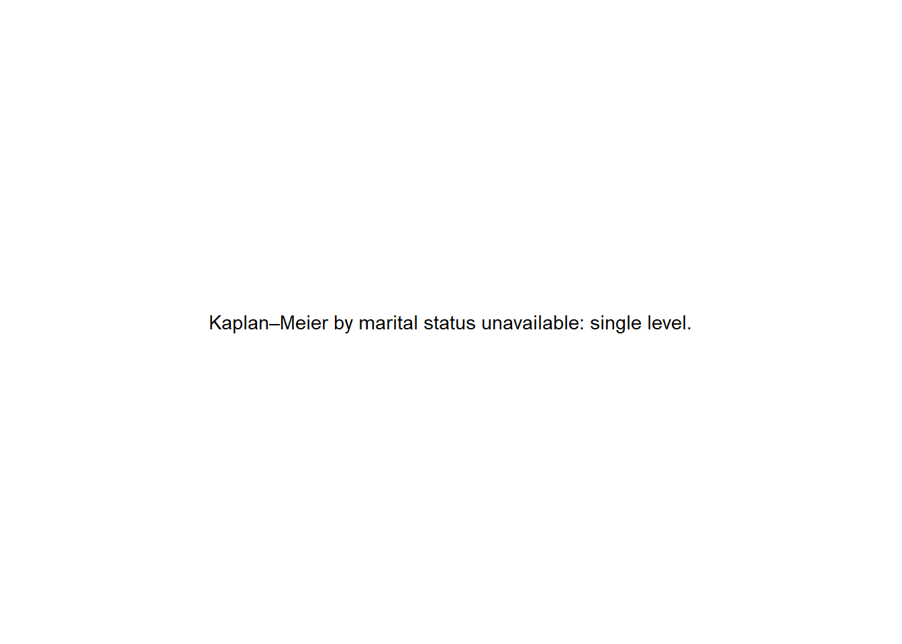
15.8 Illustrative Survival and Hazard Functions (Figures 19.8–19.10)
time_grid <- tibble(t = seq(0, 500, by = 1)) |>
mutate(
hazard = 0.01,
survival = exp(-hazard * t),
failure = 1 - survival
)
plot_survival <- ggplot(time_grid, aes(x = t, y = survival)) +
geom_line(colour = "black") +
labs(x = "Time", y = "Survival probability") +
theme_minimal()
plot_failure <- ggplot(time_grid, aes(x = t, y = failure)) +
geom_line(colour = "black", linetype = "dashed") +
labs(x = "Time", y = "Failure probability") +
theme_minimal()
plot_survival + plot_failure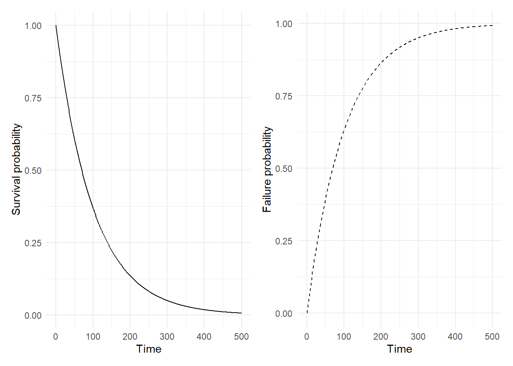
weibull_haz <- tibble(
t = seq(0.01, 10, length.out = 500)
) |>
mutate(
p_0_5 = 0.5 * t^(0.5 - 1),
p_1 = 1 * t^(1 - 1),
p_1_5 = 1.5 * t^(1.5 - 1),
p_2 = 2 * t^(2 - 1),
p_3 = 3 * t^(3 - 1)
) |>
pivot_longer(-t, names_to = "shape", values_to = "hazard") |>
mutate(shape = recode(shape,
p_0_5 = "p = 0.5",
p_1 = "p = 1",
p_1_5 = "p = 1.5",
p_2 = "p = 2",
p_3 = "p = 3"))
ggplot(weibull_haz, aes(x = t, y = hazard, linetype = shape)) +
geom_line(colour = "black") +
labs(x = "Time", y = "Hazard", linetype = "Shape") +
theme_minimal()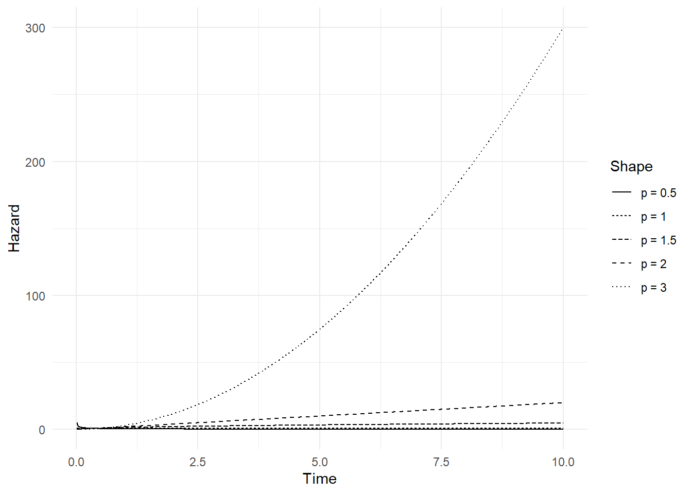
15.9 Cox Proportional-Hazards Model
cox_model <- coxph(
Surv(surv_mi, died) ~ sex + age + mar_c2 + card + ptca,
data = mi,
ties = "breslow"
)
cox_efron <- update(cox_model, ties = "efron")
cox_exact <- update(cox_model, ties = "exact")
bind_rows(
tidy(cox_model, exponentiate = TRUE, conf.int = TRUE) |> mutate(ties = "Breslow"),
tidy(cox_efron, exponentiate = TRUE, conf.int = TRUE) |> mutate(ties = "Efron"),
tidy(cox_exact, exponentiate = TRUE, conf.int = TRUE) |> mutate(ties = "Exact")
)# A tibble: 15 × 8
term estimate std.error statistic p.value conf.low conf.high ties
<chr> <dbl> <dbl> <dbl> <dbl> <dbl> <dbl> <chr>
1 sexMale 1.54 0.164 2.63 8.47e- 3 1.12 2.12 Bres…
2 age 1.05 0.00609 8.18 2.86e-16 1.04 1.06 Bres…
3 mar_c2Married NA 0 NA NA NA NA Bres…
4 card 5.42 0.267 6.33 2.45e-10 3.21 9.14 Bres…
5 ptca 0.380 0.182 -5.32 1.06e- 7 0.266 0.543 Bres…
6 sexMale 1.54 0.164 2.63 8.50e- 3 1.12 2.12 Efron
7 age 1.05 0.00609 8.19 2.68e-16 1.04 1.06 Efron
8 mar_c2Married NA 0 NA NA NA NA Efron
9 card 5.53 0.267 6.40 1.56e-10 3.28 9.35 Efron
10 ptca 0.377 0.183 -5.34 9.10e- 8 0.264 0.539 Efron
11 sexMale 1.54 0.165 2.63 8.49e- 3 1.12 2.13 Exact
12 age 1.05 0.00610 8.19 2.61e-16 1.04 1.06 Exact
13 mar_c2Married NA 0 NA NA NA NA Exact
14 card 5.55 0.270 6.34 2.25e-10 3.27 9.42 Exact
15 ptca 0.377 0.183 -5.33 9.65e- 8 0.263 0.540 Exact15.10 Baseline Hazard and Survivor Functions (Figures 19.12–19.13)
km_sex <- survfit(Surv(surv_mi, died) ~ sex, data = mi)
plot_survfit(
km_sex,
conf.int = TRUE,
xlab = "Survival time (days)",
ylab = "Survival probability",
legend.title = "Sex",
legend.labs = levels(mi$sex)
)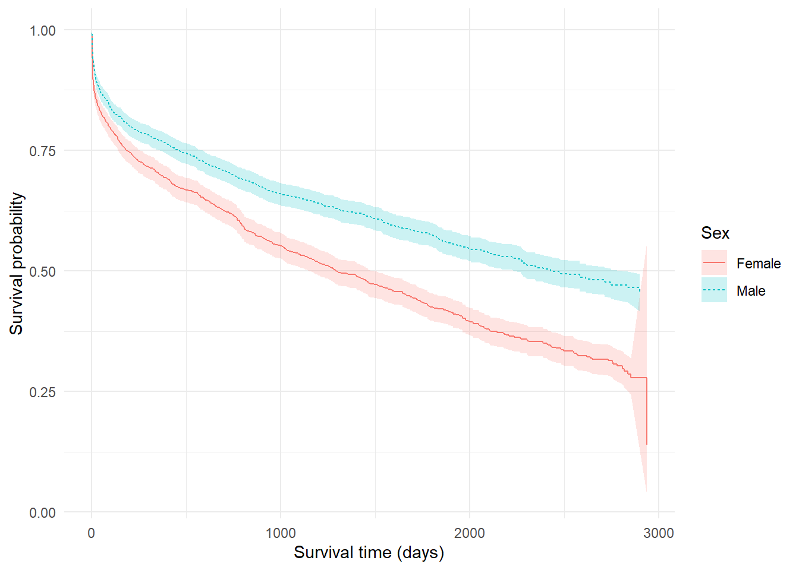
cox_rescaled <- coxph(
Surv(surv_mi, died) ~ sex + I(age - 60) + mar_c2 + card + ptca,
data = mi,
ties = "efron"
)
basehaz_df <- basehaz(cox_rescaled, centered = FALSE) |>
mutate(smoothed = zoo::rollmean(hazard, k = 20, fill = NA, align = "center"))
ggplot(basehaz_df, aes(x = time, y = smoothed)) +
geom_line(colour = "black") +
labs(x = "Time (days)", y = "Baseline hazard (smoothed)") +
theme_minimal()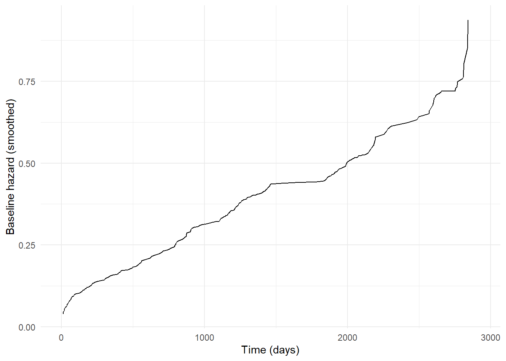
15.11 Stratified Cox Model
cox_strata <- coxph(
Surv(surv_mi, died) ~ mar_c2 + age + card + ptca + strata(sex),
data = mi,
ties = "efron"
)
cox_fixed <- coxph(
Surv(surv_mi, died) ~ sex * mar_c2 + age + card + ptca,
data = mi,
ties = "efron"
)
list(
stratified = tidy(cox_strata, exponentiate = TRUE, conf.int = TRUE),
fixed_effect = tidy(cox_fixed, exponentiate = TRUE, conf.int = TRUE)
)$stratified
# A tibble: 4 × 7
term estimate std.error statistic p.value conf.low conf.high
<chr> <dbl> <dbl> <dbl> <dbl> <dbl> <dbl>
1 mar_c2Married NA 0 NA NA NA NA
2 age 1.05 0.00606 8.15 3.75e-16 1.04 1.06
3 card 5.53 0.268 6.39 1.67e-10 3.27 9.34
4 ptca 0.376 0.183 -5.36 8.46e- 8 0.262 0.537
$fixed_effect
# A tibble: 6 × 7
term estimate std.error statistic p.value conf.low conf.high
<chr> <dbl> <dbl> <dbl> <dbl> <dbl> <dbl>
1 sexMale 1.54 0.164 2.63 8.50e- 3 1.12 2.12
2 mar_c2Married NA 0 NA NA NA NA
3 age 1.05 0.00609 8.19 2.68e-16 1.04 1.06
4 card 5.53 0.267 6.40 1.56e-10 3.28 9.35
5 ptca 0.377 0.183 -5.34 9.10e- 8 0.264 0.539
6 sexMale:mar_c2Marri… NA 0 NA NA NA NA 15.12 Time-Varying Covariates
# Explanation: survSplit() creates time-varying data by splitting survival records
# at specified cut points. The issue is that survSplit() may return columns with
# special classes/attributes (e.g., factors, haven_labelled) that persist even
# after as.numeric(). The solution is to extract raw values and create completely
# new numeric vectors, then build a clean data frame from scratch.
split_cuts <- sort(unique(mi$los[!is.na(mi$los) & mi$los > 0]))
# Calculate minimum observed time to set zero parameter safely
min_time <- min(mi$surv_mi[!is.na(mi$surv_mi) & mi$surv_mi > 0], na.rm = TRUE)
zero_val <- if (min_time > 0) -1 else min_time - 1
# Perform the split
tvc_split <- survSplit(
Surv(surv_mi, died) ~ .,
data = mi,
cut = split_cuts,
start = "start",
end = "stop",
event = "died",
id = "tv_id",
zero = zero_val
)
# CRITICAL FIX: Extract raw values and force to plain numeric/integer
# survSplit() may return factors or objects with attributes. We need to:
# 1. Convert to character first (handles factors)
# 2. Then convert to numeric (handles everything else)
# 3. Use c() to create a completely new vector with no attributes
start_raw <- as.numeric(c(as.character(tvc_split$start)))
stop_raw <- as.numeric(c(as.character(tvc_split$stop)))
died_raw <- as.integer(c(as.character(tvc_split$died)))
los_raw <- as.numeric(c(as.character(tvc_split$los)))
# Verify they are truly numeric/integer (not factors or other types)
if (!is.numeric(start_raw) || !is.numeric(stop_raw) || !is.integer(died_raw)) {
stop("Type conversion failed: start/stop must be numeric, died must be integer")
}
# Create derived variable
discharged_raw <- as.integer(ifelse(stop_raw >= los_raw, 1L, 0L))
# Build a completely clean data frame from scratch
# This ensures no residual attributes from survSplit()
mi_tvc_clean <- data.frame(
start = start_raw,
stop = stop_raw,
died = died_raw,
discharged = discharged_raw,
stringsAsFactors = FALSE
)
# Create Surv object and verify it works
surv_obj <- Surv(mi_tvc_clean$start, mi_tvc_clean$stop, mi_tvc_clean$died)
if (!inherits(surv_obj, "Surv")) {
stop("Failed to create Surv object - check that start/stop/died are valid")
}
# Store Surv object as a column and use it directly in the formula
# This avoids coxph() having to evaluate Surv(start, stop, died) which
# can fail if variables have unexpected types/attributes
mi_tvc_clean$surv_time <- surv_obj
# Fit model using pre-created Surv object
tvc_ptca <- coxph(surv_time ~ discharged, data = mi_tvc_clean, ties = "efron")
# Second model: time-dependent effect of cardiac arrest
# This uses the original mi data (not split), so no conversion needed
tvc_card <- coxph(
Surv(surv_mi, died) ~ card + tt(card),
data = mi,
ties = "efron",
tt = function(x, t, ...) x * log(t + 1)
)
list(
discharged_effect = tidy(tvc_ptca, exponentiate = TRUE, conf.int = TRUE),
card_time_interaction = tidy(tvc_card, exponentiate = TRUE, conf.int = TRUE)
)$discharged_effect
# A tibble: 1 × 7
term estimate std.error statistic p.value conf.low conf.high
<chr> <dbl> <dbl> <dbl> <dbl> <dbl> <dbl>
1 discharged 557950771. 593. 0.0340 0.973 0 Inf
$card_time_interaction
# A tibble: 2 × 7
term estimate std.error statistic p.value conf.low conf.high
<chr> <dbl> <dbl> <dbl> <dbl> <dbl> <dbl>
1 card 35.9 0.164 21.9 2.66e-106 26.1 49.5
2 tt(card) 0.550 0.0497 -12.0 2.66e- 33 0.499 0.60615.13 Additive Hazards Model
aalen_model <- timereg::aalen(Surv(surv_mi, died) ~ const(ptca),
data = mi,
robust = TRUE,
n.sim = 0)
# Check what columns are available in the cumulative coefficients
cum_data <- as.data.frame(aalen_model$cum)
col_names <- names(cum_data)
# Find the ptca column (might be named "ptca" or "const(ptca)" or similar)
ptca_col <- grep("ptca", col_names, ignore.case = TRUE, value = TRUE)
if (length(ptca_col) == 0) {
# If no ptca column found, try to find any non-time column
ptca_col <- setdiff(col_names, c("time", "time.1"))[1]
if (is.na(ptca_col)) {
stop("Could not find ptca column in aalen model output")
}
} else {
ptca_col <- ptca_col[1] # Use first match
}
# Select time and the ptca column using base R (more reliable)
aalen_df <- data.frame(
time = cum_data$time,
ptca = cum_data[[ptca_col]],
stringsAsFactors = FALSE
)
# Filter to time < 2000
aalen_df <- aalen_df[aalen_df$time < 2000, ]
ggplot(aalen_df, aes(x = time, y = ptca)) +
geom_line(colour = "black") +
labs(
x = "Time (days)",
y = "Cumulative coefficient (ptca)"
) +
theme_minimal()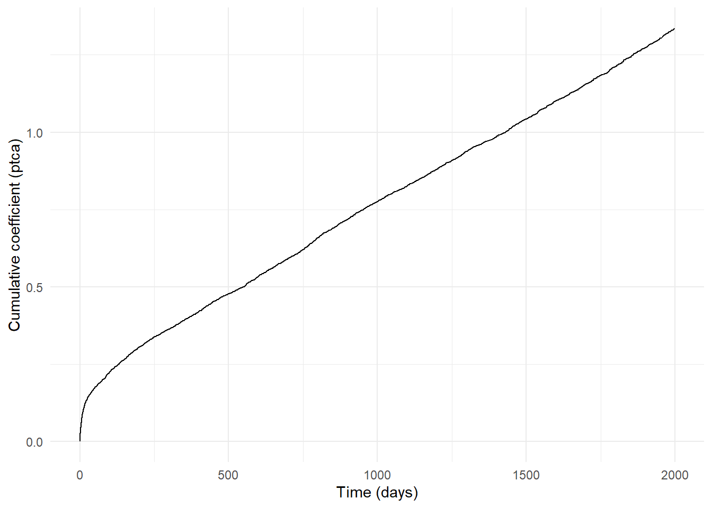
15.14 Proportional-Hazards Diagnostics (Figures 19.15–19.17)
cox_card <- coxph(Surv(surv_mi, died) ~ sex + age + mar_c2 + card + ptca, data = mi)
ph_df <- survfit(cox_card, newdata = data.frame(
sex = factor("Male", levels = levels(mi$sex)),
age = median(mi$age, na.rm = TRUE),
mar_c2 = factor("Married", levels = levels(mi$mar_c2)),
card = c(0, 1),
ptca = 0
))
plot_survfit(
ph_df,
fun = "cloglog",
conf.int = FALSE,
xlab = "Time (days)",
ylab = "-log cumulative hazard",
legend.title = "Cardiac arrest",
legend.labs = c("0", "1")
) +
scale_x_log10()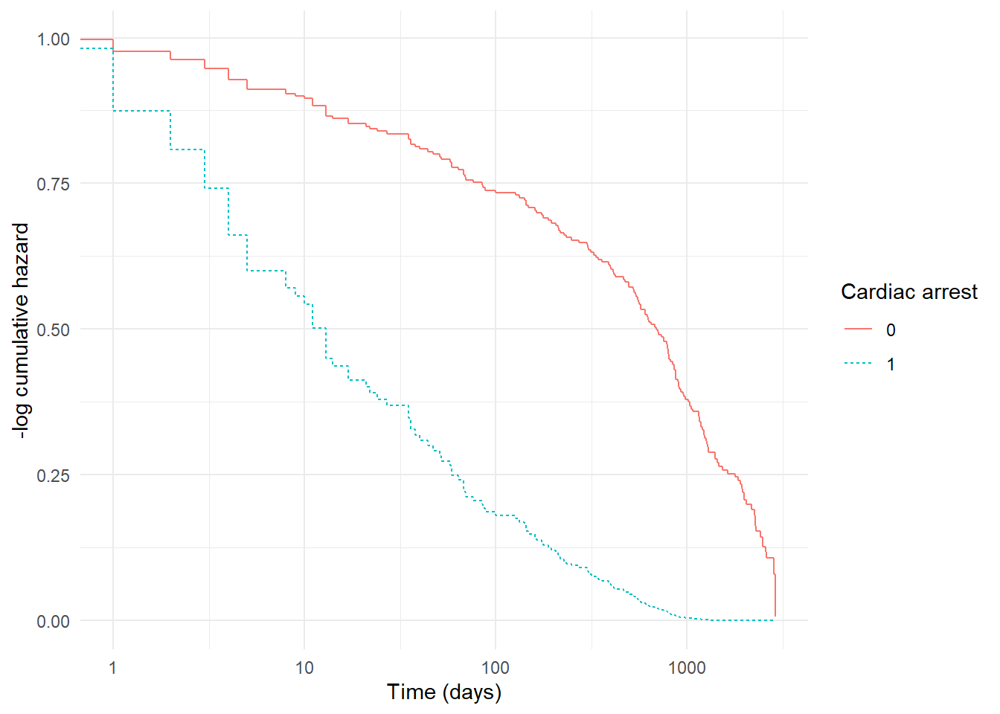
cox_model_ph <- coxph(Surv(surv_mi, died) ~ sex + age + mar_c2 + card + ptca,
data = mi,
ties = "efron")
# Use identity transform to avoid log transform issues with zero/negative times
sch_test <- cox.zph(cox_model_ph, transform = "identity")
# Manually extract and plot residuals to avoid internal plotting issues
if (!is.null(sch_test) && "age" %in% names(sch_test)) {
age_test <- sch_test[["age"]]
if (!is.null(age_test) && is.list(age_test)) {
# Extract x (transformed time) and y (residuals) values
x_vals <- if ("x" %in% names(age_test)) age_test$x else NULL
y_vals <- if ("y" %in% names(age_test)) age_test$y else NULL
# Check if values are finite before plotting
if (!is.null(x_vals) && !is.null(y_vals) &&
all(is.finite(x_vals)) && all(is.finite(y_vals)) &&
length(x_vals) == length(y_vals) && length(x_vals) > 0) {
# Create plot manually
plot(x_vals, y_vals,
main = "Scaled Schoenfeld residuals: age",
xlab = "Time",
ylab = "Scaled Schoenfeld residual",
pch = 19, cex = 0.5)
# Add smoothed line if possible
if (length(x_vals) >= 3) {
tryCatch({
smooth_line <- loess(y_vals ~ x_vals, span = 0.75)
x_smooth <- seq(min(x_vals), max(x_vals), length = 100)
y_smooth <- predict(smooth_line, newdata = data.frame(x_vals = x_smooth))
lines(x_smooth, y_smooth, col = "red", lwd = 2)
}, error = function(e) {
# If smoothing fails, just plot the points
})
}
abline(h = 0, lty = 2, col = "blue")
} else {
# If extraction fails, try the default plot method with error handling
tryCatch({
plot(sch_test, var = "age", resid = TRUE,
main = "Scaled Schoenfeld residuals: age",
xlab = "Time",
ylab = "Scaled Schoenfeld residual")
abline(h = 0, lty = 2)
}, error = function(e) {
warning("Could not plot Schoenfeld residuals: ", e$message)
})
}
}
}
sch_test chisq df p
sex 1.636 1 0.201
age 4.408 1 0.036
card 5.447 1 0.020
ptca 0.129 1 0.720
GLOBAL 11.008 4 0.02615.15 Cox vs Kaplan–Meier Comparison (Figure 19.16)
cox_predictions <- survfit(cox_model_ph,
newdata = data.frame(
sex = factor("Male", levels = levels(mi$sex)),
age = median(mi$age, na.rm = TRUE),
mar_c2 = factor("Married", levels = levels(mi$mar_c2)),
card = c(0, 1),
ptca = 0
))
km_card <- survfit(Surv(surv_mi, died) ~ card, data = mi)
surv_overlay_plot <- function(km_fit, cox_fit, legend_labs = NULL, legend_title = "Group") {
km_df <- tidy_survfit(km_fit) |>
mutate(model = factor("Kaplan-Meier"))
cox_df <- tidy_survfit(cox_fit) |>
mutate(model = factor("Cox model"))
if (!is.null(legend_labs) && length(legend_labs) == nlevels(km_df$strata)) {
km_df <- km_df |>
mutate(strata = factor(strata, levels = levels(strata), labels = legend_labs))
cox_df <- cox_df |>
mutate(strata = factor(strata, levels = levels(strata), labels = legend_labs))
}
combined <- bind_rows(km_df, cox_df) |>
mutate(model = factor(model, levels = c("Kaplan-Meier", "Cox model")))
ggplot(combined, aes(x = time, y = estimate, colour = strata, linetype = model)) +
geom_step(size = 0.8) +
labs(
x = "Time (days)",
y = "Survival probability",
colour = legend_title,
linetype = "Estimator"
) +
scale_linetype_manual(values = c("Kaplan-Meier" = "solid", "Cox model" = "dashed")) +
theme_minimal()
}
surv_overlay_plot(
km_card,
cox_predictions,
legend_labs = c("Cardiac arrest = 0", "Cardiac arrest = 1"),
legend_title = "Cardiac arrest"
)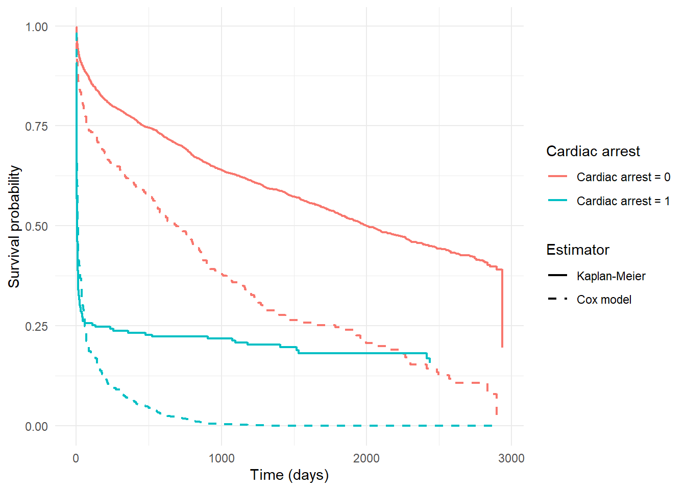
15.16 Independence of Censoring
mi_censor <- mi |>
mutate(
censored = if_else(died == 0, 1, 0),
late_censor = surv_mi > quantile(surv_mi, 0.75, na.rm = TRUE)
)
tibble(
mean_late_censor = mean(mi_censor$late_censor),
by_marital = mi_censor |>
group_by(mar_c2) |>
summarise(prop_late = mean(late_censor), .groups = "drop")
)# A tibble: 2 × 2
mean_late_censor by_marital$mar_c2 $prop_late
<dbl> <fct> <dbl>
1 NA Married NA
2 NA <NA> NA15.17 Parametric Survival Models
# Prepare data for flexsurvreg
# flexsurvreg requires factors to have at least 2 unique values in the actual data
# (not just 2 levels defined - must have 2+ values present)
mi_param <- mi
# Helper function to check if a factor has 2+ unique non-NA values
has_multiple_values <- function(x) {
if (is.factor(x)) {
unique_vals <- unique(x[!is.na(x)])
return(length(unique_vals) >= 2)
}
return(FALSE)
}
# Check and convert factors that don't have multiple values
if (is.factor(mi_param$sex)) {
if (!has_multiple_values(mi_param$sex)) {
# Convert to numeric if only one unique value present
mi_param$sex <- as.numeric(mi_param$sex)
}
}
if (is.factor(mi_param$mar_c2)) {
if (!has_multiple_values(mi_param$mar_c2)) {
# Convert to numeric if only one unique value present
mi_param$mar_c2 <- as.numeric(mi_param$mar_c2)
}
}
# Build formula - only include factors that have 2+ unique values in the data
formula_parts <- c()
if (is.factor(mi_param$sex) && has_multiple_values(mi_param$sex)) {
formula_parts <- c(formula_parts, "sex")
}
if (is.factor(mi_param$mar_c2) && has_multiple_values(mi_param$mar_c2)) {
formula_parts <- c(formula_parts, "mar_c2")
}
# Always include numeric variables
formula_parts <- c(formula_parts, "age", "card", "ptca")
# Create formula
if (length(formula_parts) > 0) {
formula_str <- paste("Surv(surv_mi, died) ~", paste(formula_parts, collapse = " + "))
model_formula <- as.formula(formula_str)
} else {
# Fallback if no valid predictors
model_formula <- Surv(surv_mi, died) ~ age + card + ptca
}
# Ensure factors in the data frame are properly set up before fitting
# Drop unused levels from factors to avoid contrast issues
for (var_name in formula_parts) {
if (var_name %in% names(mi_param) && is.factor(mi_param[[var_name]])) {
mi_param[[var_name]] <- droplevels(mi_param[[var_name]])
}
}
# Validate survival times before fitting
# flexsurvreg requires positive survival times
# Filter to complete cases and ensure times are positive
required_vars <- c("surv_mi", "died", formula_parts)
required_vars <- required_vars[required_vars %in% names(mi_param)]
mi_param_clean <- mi_param[complete.cases(mi_param[, required_vars, drop = FALSE]), ]
mi_param_clean <- mi_param_clean[mi_param_clean$surv_mi > 0 & is.finite(mi_param_clean$surv_mi), ]
# Check if we have enough data
if (nrow(mi_param_clean) < 10) {
stop("Insufficient valid data for parametric survival models")
}
# Check if there's variation in survival times
if (var(mi_param_clean$surv_mi, na.rm = TRUE) == 0) {
stop("No variation in survival times - cannot fit parametric models")
}
# Re-check factors after filtering - they might have collapsed to single levels
# Rebuild formula if needed
formula_parts_clean <- c()
if ("sex" %in% formula_parts && is.factor(mi_param_clean$sex) && has_multiple_values(mi_param_clean$sex)) {
formula_parts_clean <- c(formula_parts_clean, "sex")
mi_param_clean$sex <- droplevels(mi_param_clean$sex)
}
if ("mar_c2" %in% formula_parts && is.factor(mi_param_clean$mar_c2) && has_multiple_values(mi_param_clean$mar_c2)) {
formula_parts_clean <- c(formula_parts_clean, "mar_c2")
mi_param_clean$mar_c2 <- droplevels(mi_param_clean$mar_c2)
}
# Always include numeric variables
formula_parts_clean <- c(formula_parts_clean, "age", "card", "ptca")
# Update formula if factors were removed
if (length(formula_parts_clean) != length(formula_parts)) {
formula_str_clean <- paste("Surv(surv_mi, died) ~", paste(formula_parts_clean, collapse = " + "))
model_formula <- as.formula(formula_str_clean)
}
# Fit models with error handling
exp_model <- tryCatch({
flexsurvreg(model_formula,
data = mi_param_clean,
dist = "exponential")
}, error = function(e) {
warning("Exponential model failed: ", e$message)
# Try with simpler formula if full model fails
tryCatch({
flexsurvreg(Surv(surv_mi, died) ~ age + card + ptca,
data = mi_param_clean,
dist = "exponential")
}, error = function(e2) {
warning("Exponential model failed even with simplified formula: ", e2$message)
NULL
})
})
weibull_model <- tryCatch({
flexsurvreg(model_formula,
data = mi_param_clean,
dist = "weibull")
}, error = function(e) {
warning("Weibull model failed: ", e$message)
# Try with simpler formula if full model fails
tryCatch({
flexsurvreg(Surv(surv_mi, died) ~ age + card + ptca,
data = mi_param_clean,
dist = "weibull")
}, error = function(e2) {
warning("Weibull model failed even with simplified formula: ", e2$message)
NULL
})
})
# Prepare output - handle NULL models gracefully
output_list <- list()
if (!is.null(exp_model)) {
output_list$exponential <- tidy(exp_model)
} else {
output_list$exponential <- tibble(note = "Exponential model could not be fitted")
}
if (!is.null(weibull_model)) {
output_list$weibull <- tidy(weibull_model)
} else {
output_list$weibull <- tibble(note = "Weibull model could not be fitted")
}
# Comparison table
if (!is.null(exp_model) && !is.null(weibull_model)) {
output_list$comparison <- tibble(
model = c("Exponential", "Weibull"),
AIC = c(exp_model$AIC, weibull_model$AIC)
)
} else {
output_list$comparison <- tibble(note = "Model comparison not available - one or both models failed")
}
output_list$exponential
# A tibble: 5 × 5
term estimate std.error statistic p.value
<chr> <dbl> <dbl> <dbl> <dbl>
1 rate 0.00000711 0.00000149 NA NA
2 sexMale 0.178 0.0551 3.24 1.20e- 3
3 age 0.0586 0.00247 23.7 2.83e-124
4 card 2.06 0.0889 23.1 2.28e-118
5 ptca -1.07 0.0623 -17.2 4.25e- 66
$weibull
# A tibble: 6 × 5
term estimate std.error statistic p.value
<chr> <dbl> <dbl> <dbl> <dbl>
1 shape 0.557 0.0122 NA NA
2 scale 1660966. 642843. NA NA
3 sexMale -0.234 0.0984 -2.38 1.73e- 2
4 age -0.0894 0.00457 -19.6 2.59e-85
5 card -3.29 0.165 -20.0 9.62e-89
6 ptca 1.68 0.115 14.6 2.03e-48
$comparison
# A tibble: 2 × 2
model AIC
<chr> <dbl>
1 Exponential 24558.
2 Weibull 23664.15.18 Residual Diagnostics
# Extract linear predictor and martingale residuals manually
# (augment() may not work reliably with coxph objects)
martingale_resid <- data.frame(
linear_predictor = predict(cox_model_ph, type = "lp"),
martingale = residuals(cox_model_ph, type = "martingale"),
stringsAsFactors = FALSE
)
ggplot(martingale_resid, aes(x = linear_predictor, y = martingale)) +
geom_point(alpha = 0.3) +
geom_smooth(se = FALSE, method = "loess", colour = "black") +
labs(x = "Linear predictor", y = "Martingale residual") +
theme_minimal()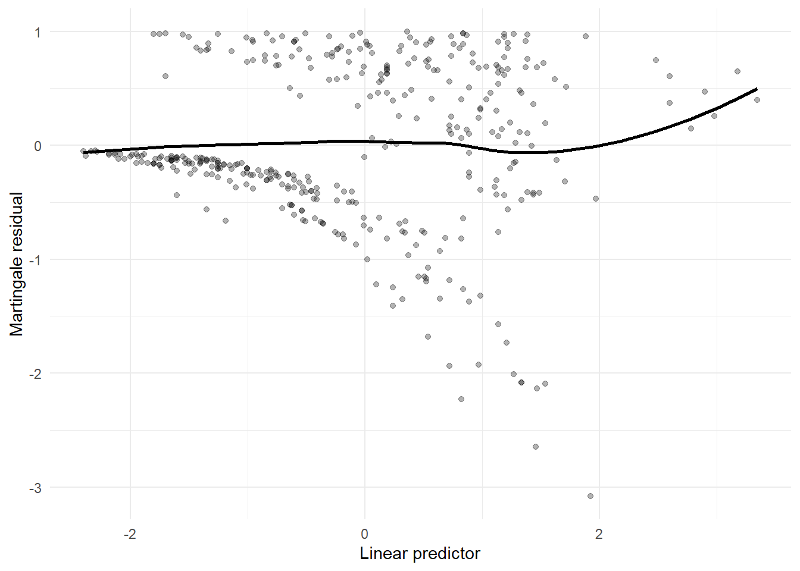
deviance_resid <- residuals(cox_model_ph, type = "deviance")
ggplot(tibble(resid = deviance_resid), aes(sample = resid)) +
stat_qq() +
stat_qq_line() +
labs(title = "Q–Q plot of deviance residuals") +
theme_minimal()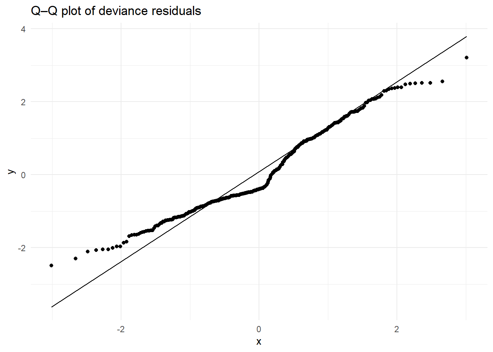
15.19 References
Dohoo, I., Martin, W., & Stryhn, H. Methods in Epidemiologic Research. University of Prince Edward Island, 2012. Available at: https://projects.upei.ca/mer/
Kirkwood, B. R., & Sterne, J. A. C. Essential Medical Statistics, 2nd Edition. Wiley-Blackwell, 2003. Available at: https://bcs.wiley.com/he-bcs/Books?action=index&bcsId=11848&itemId=0865428719
Batra, N., et al. The Epidemiologist R Handbook. Applied Epi Incorporated, 2021. Available at: https://www.epirhandbook.com/en/
Rothman KJ, Huybrechts KF, Murray EJ. Epidemiology. 3rd ed. Oxford University Press; 2024. ISBN: 9780197751541.
Jordan RA, Celeste RK, Bernabe E, Schwendicke F. Big Data in Epidemiology: Brave New World? J Dent Res. 2024 Oct;103(11):1047-1050. doi: 10.1177/00220345241272034. Epub 2024 Oct 2. PMID: 39359106; PMCID: PMC11653310.
Mazzella, A. R4SME: R for Statistical Methods in Epidemiology. GitHub repository. Available at: https://github.com/andreamazzella/R4SME
Mazzella, A. R4ASME: R for Advanced Statistical Methods in Epidemiology. GitHub repository. Available at: https://github.com/andreamazzella/r4asme